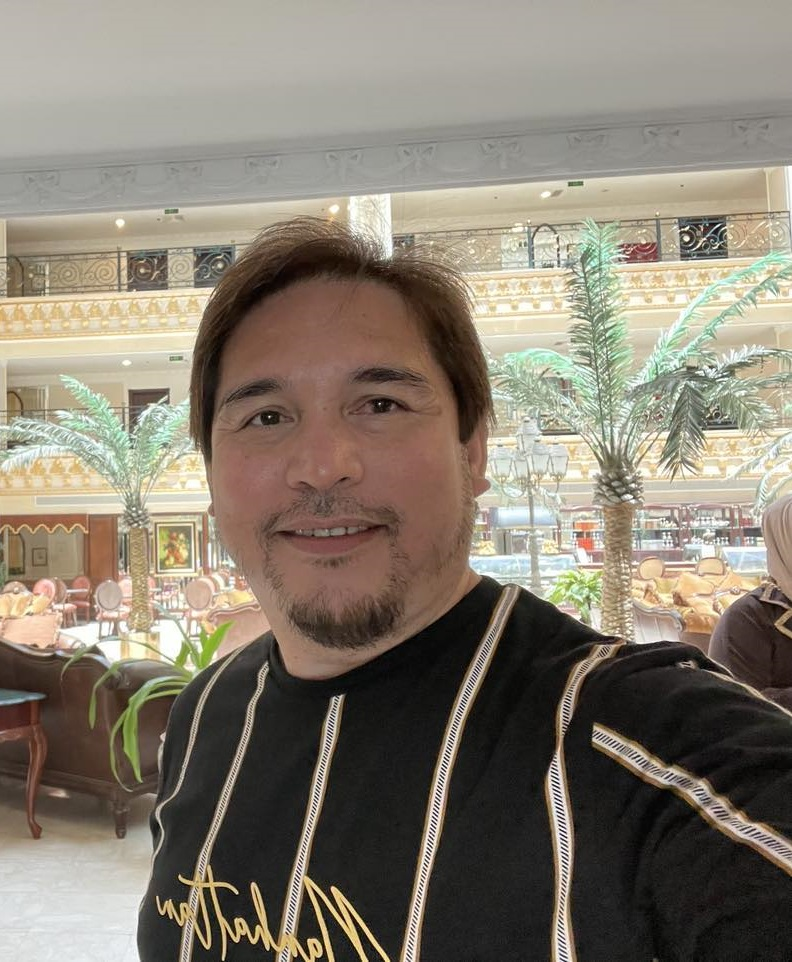

Bashiek H. Ladja

Objective
A career oriented Computer Engineer. Fully equipped with years of experience in Programming and
Software Development from different promising Institutions. I am looking to a Transition where
I can have a potential impact on Intersystem while I continue to learn and have a career development.
Education
- Bachelor of Science in Computer Engineering - Universidad de Zamboanga (formerly known ZAEC) 1992-1997
Work Experience
Computer Programmer / System Analyst - King Abdullah Medical City
February 18, 2012–Present
- Responsible for Human Resources Information Management HRIM System Automation- Archiving Section. Uses a Software that deals with a fully Digitized and Automated Correspondences and ensures validity and completeness.
- Data Analysis and Data Validation.
- Creates and Provides Statistical Report to the higher Management.
- Oversees complaints from end-user of Enjaz System and escalate to Enjaz Specialist personnel if cannot be resolved in our unit.
- Liaison Officer between Manpower Planning Department and Recruitment Department, solely responsible for seat creation per the approved budget.
Crestron Programmer/Support Specialist - United Yousef M. Naghi Co. Ltd. ProAV Division
May 20, 2005–January 04, 2012
- Crestron Programmer for home and office automation. Clients: Mobily Telecom, MODA, SAIB Bank, NCB and others.
- PC Assembly and Configuration.
- Responsible for Audio and Video cabling design and reflect in the as-built AutoCAD drawings.
- Directly involved in maintaining and troubleshooting systems to ensure the system runs effectively.
Computer Programmer/Technician - ShabNur Computer Graphics
December 2003–April 2005
- Creates Database Program using Visual Foxpro.
- Maintains PC and its network.
- Responsible for PC Assembly and Configuration.
Accomplishments
Digitized/Automated System
- Designed and Developed the Human Resources Information Management (HRIM)- a system that plays a vital role in the Institution’s success in several Accreditations such as Joint Commission International Accreditation (JCIA) and in CBAHI.
- Designed and Developed the KAMC-Sport Center Registration System- a user friendly auto generated system that is accessible to all employees.
- Designed and Developed the KAMC-e-Recruitment System – Designed to help recruiters automate certain tasks and processes, Such as accurate salary computation and create Job Offer.
Skills
- Microsoft Office Suit
- Programming Language as such VFP 9.0
- Home and Office Automation
- Computer Hardware
- CCTV and Security Systems
Awards and Certifications
- Introduction to PHP - 2023
- Network Security - 2023
- Python for Beginners - 2023
- Bosch Security System CCTV - 2009
- Crestron Control System Essentials - 2007